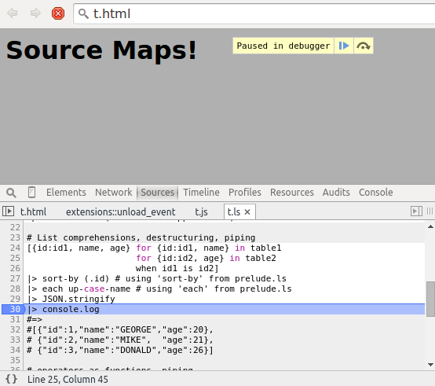

LiveScript 1.4.0 - Source Maps and more!
LiveScript is a language which compiles to JavaScript. It has a straightforward mapping to JavaScript and allows you to write expressive code devoid of repetitive boilerplate. While LiveScript adds many features to assist in functional style programming, it also has many improvements for object oriented and imperative programming.
For more information, check out the LiveScript site.
1.4.0
LiveScript 1.4.0 includes source maps, functional JSON command line processing, improved generator support, along with many bug fixes. Full changelog.
Package name change: LiveScript's package name on npm is now livescript - all lower case (previously LiveScript) - packages with upper case letters in their names are no longer allowed to publish updates on npm. Please use npm uninstall -g LiveScript and then npm install -g livescript.
Source Maps
Use the -m, --map option when compiling to generate source maps. It has several possible values, none - the default, linked, linked-src, embedded, and debug

There are three files involved when generating sourcemaps:
- The original LiveScript source
- The sourcemap
- The generated JavaScript source
a can optionally be embedded inside b, and b can optionally be embedded inside c via a comment.
linked: No embedding, c links to b via a relative path, and same for b to a
linked-src: b is embedded inside c, but a is linked to
embedded: Everything is embedded inside c
debug: Same as linked, but will also output a human readable representation of the source-node tree (similar to the output from the ast option) to a '.map.debug' file.
Use linked or linked-src if you are directly serving the output from lsc to the browser - (ie. not performing further processing). They keep the original source separate, so the JavaScript file is still small. linked-src just means you have one fewer file to carry around at the expense of increasing the size of the JavaScript file.
Use embedded for everything else - it's self-contained and it's the only form most other tools such as browserify will accept as input. The file will be significantly larger, but you can remedy this by running a separate tool at the end of your build pipeline to split the output back into the linked form.
Thanks to Diggory Blake for his big pull request!
JSON
You can combine -e,--eval with JSON data for functional style command line JSON processing. The JSON data you supply is bound to this in the eval expression. You can either pipe in JSON, and use the -j,--json flag, or use a file with the .jsonextension.
$ lsc -e '@name' package.json "livescript" $ cat package.json | lsc -je '@name' "livescript"
You can include prelude.ls with the -d,--prelude flag.
$ lsc -de '@files |> map (.to-upper-case!)' package.json [ "LIB", "BIN", "README.MD", "LICENSE" ]
You can easily require modules as well, with the -r,--require flag.
lsc -r 'path' -de '@files |> map -> [it, path.resolve it]' package.json
[
[
"lib",
"/home/z/open-source/LiveScript/lib"
],
[
"bin",
"/home/z/open-source/LiveScript/bin"
],
[
"README.md",
"/home/z/open-source/LiveScript/README.md"
],
[
"LICENSE",
"/home/z/open-source/LiveScript/LICENSE"
]
]
Other improvements
Many fixes to yield, allowing by in list slices, eg. list[1 til 5 by 2], added backcall generators *<-, and many other fixes.
Thanks
Thanks to the people who have contributed to this release, including Ryan Hendrickson, Matt Brennan, skovsgaard, vendethiel, impinball, synapsos, Haspaker, Diggory Blake, Raine Virta, and Rafael Belvederese,
For more information on LiveScript, check out the LiveScript site.
For more on LiveScript and prelude.ls, follow @gkzahariev.
comments powered by DisqusLiveScript
Blog Posts
- LiveScript 1.4.0 - Source Maps and more!
- LiveScript 1.3.0 Released!
- LiveScript 1.2.0 Released!
- The shortest FizzBuzzBazz - can you do better?
- 10 things you didn't know LiveScript can do
- LiveScript 1.1.0 Released!
- Powerful jQuery with LiveScript
- LiveScript 1.0.0 Released
- Functional Programming in JavaScript using LiveScript - Part 2
- 10 Reasons to Switch from CoffeeScript to LiveScript
- Functional Programming in JavaScript using LiveScript and prelude.ls
- 10 LiveScript One Liners to Impress Your Friends